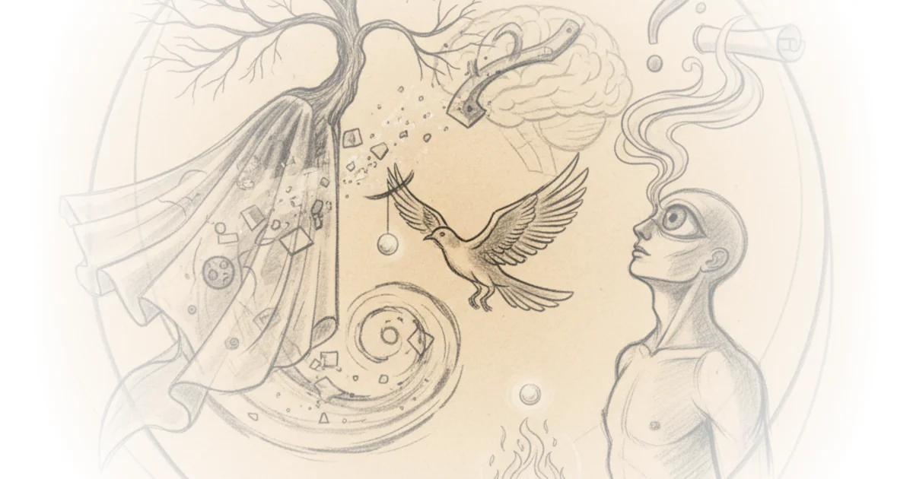

In a conversation that reads less like an interview and more like a late-night séance, producer and writer Rick Rubin dismantles the rigid boundaries between art, therapy, and the chaotic human experience. While the transcript captures a meandering dialogue, Rubin's central thesis is startlingly clear: true creativity isn't about mastering rules, but about the courage to appropriate the strange, the personal, and the forbidden to find a unique voice. He argues that even the most structured forms, from Shakespearean drama to screenwriting, are merely vessels for something far more fluid and subtextual.
The Architecture of Story and the Fear of AI
Rubin approaches storytelling not as a formula to be solved, but as a craft of precise placement. He draws a direct line between the literary giants and the visual arts, suggesting that the mechanism of communication remains constant across mediums. "I think they might be because uh I think you get to unleash the use of words into uh ideas," Rubin states, emphasizing the writer's role as a curator of language. He illustrates this by citing the work of Dennis Johnson, whose collection Jesus' Son is widely regarded as a masterpiece of the short story form, noting how Johnson, like the writer George Saunders, has mastered the art of placing "one brush stroke in front of another to, you know, to communicate an idea."

This perspective allows Rubin to address a modern anxiety: the rise of artificial intelligence. He acknowledges that AI has learned the "dramatic function of Shakespeare" and understands catharsis and act structure. However, he remains skeptical that this technical proficiency equates to genuine storytelling. "What's scaring me with AI a little bit? It's now learned to it learned dramatic um function of Shakespeare," he observes. The implication is that while machines can replicate the skeleton of a story, they lack the lived experience required to give it flesh. Critics might note that AI is rapidly evolving beyond simple structural mimicry, yet Rubin's point stands: the emotional resonance of art often comes from the imperfections and specificities of the human condition, not just the adherence to a three-act structure.
You don't get to be Kandinsky without spending the time learning to be Kandinsky, and you don't get to be Rick Rubin without learning how to be you.
Appropriation and the Creative Process
The conversation shifts to the messy, often unglamorous reality of how artists borrow from one another. Rubin rejects the notion of originality in favor of a more honest process of cultural appropriation. He recalls a moment with filmmaker Akira Kurosawa, who asked him to help write an Anglo character for the film Rhapsody in August. Rubin realized his own "Jewish intellectual psychiatric kind of prosy" style clashed with Kurosawa's haiku-like descriptions, such as "an ant on an ant hill." Rather than forcing his style, he learned to borrow the feeling of the sound from a duet between Emmylou Harris and Lefty Frizzell, using that emotional texture to inform his writing. "Anything's culturally appropriate in the sense that you can use anybody else's work to if it encourages you it creates for you something that you hadn't thought about," Rubin explains.
This approach mirrors the way he views his own life and work, where the boundary between the personal and the professional is porous. He mentions his "porch sessions" during the pandemic, where strangers would gather to discuss life, death, and work, creating a spontaneous community of inquiry. He admits that he didn't record these sessions, yet they shaped his thinking just as profoundly as any formal therapy or drug-induced epiphany. The argument here is that creativity is a cumulative act of listening, where the "mass of what bubbles over" becomes the source material for art.
The Subtextual and the Psychedelic
Rubin is candid about the role of altered states in his creative evolution, though he frames them as tools for expansion rather than escape. He recounts his first hallucinogenic experience in Haight-Ashbury, describing moments where "the floor opening up" or feeling like he was "having an affair with Time magazine." He is careful not to romanticize the experience, noting that for those with "tremendous fear" or unresolved trauma, such substances can be dangerous. Yet, for him, they were a way to test the limits of his own mind. "I think the same person's in there, but I think it's been reinformed in a way," he says, suggesting that these experiences didn't change his core identity but rather expanded his capacity to perceive it.
This philosophical stance extends to his views on therapy and the human psyche. He discusses his time in therapy in the late 60s and early 70s, noting that he found a psychiatrist who was "not intrusive at all" and allowed him to "fight it out" and "love it out." He connects this to the broader creative process, arguing that the best writing is subtextual. He praises Martin Scorsese for showing graffiti on a wall in Taxi Driver not to explain a plot point, but to convey a sense of place and mood. "The worst kind of writing is kind of Ernie the explainer," Rubin quips, dismissing the need for characters to articulate their feelings explicitly. Instead, he champions the idea that art should trust the audience to feel the weight of what is left unsaid.
The greatest story is that sometimes it's the most simple thing.
Bottom Line
Rubin's commentary offers a refreshing antidote to the algorithmic mindset, insisting that the most powerful stories emerge from the friction between structure and chaos, and from the willingness to borrow from the world around us. While his reliance on personal anecdotes and psychedelic experiences might feel esoteric to some, his core argument—that creativity is a craft of feeling rather than a formula of rules—is both timeless and urgently relevant. The piece's greatest strength lies in its refusal to offer easy answers, instead inviting the reader to sit with the complexity of the creative process itself.